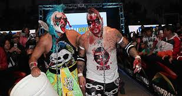

Nombre real: José Julio Pacheco Hernández
Fecha de nacimiento: 7 de febrero de 1986
Lugar de nacimiento: Juárez, Chihuahua, México
Alias: Pagano, El Noa Noa Style
Conocido por su estilo extremo y violento. Referente de la lucha hardcore en México. Su imagen con cabello de colores y maquillaje es icónica en AAA.
Principalmente activo en Lucha Libre AAA Worldwide, pero también ha luchado en empresas de Estados Unidos, Japón y Sudamérica, dejando huella con su estilo temerario.
Originario de Ciudad Juárez. Antes de ser luchador profesional fue psicólogo clÃnico. Conocido por su carisma, cercanÃa con los fans y su estilo inconfundible.